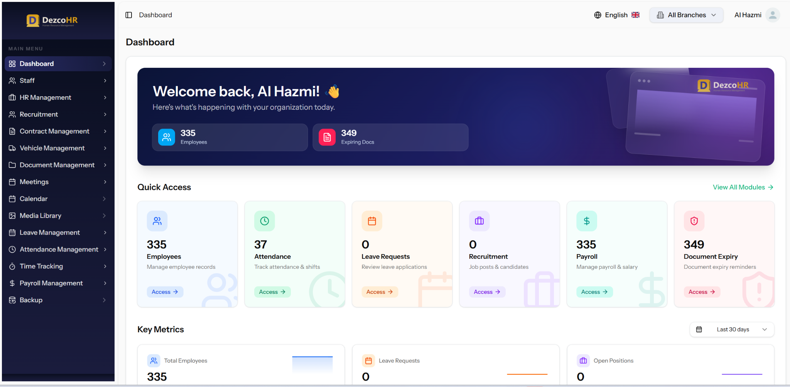

HRMS & Workforce Management Platform
A centralized Human Resource Management System dashboard bringing key workforce operations into one application, including staff, HR administration, recruitment, contracts, attendance, leave, payroll, documents and related business workflows.
Application dashboard

Original dashboard screenshot supplied for this portfolio case study. The figures shown are values visible in this captured view, not independently verified business outcomes.
What the dashboard brings together
The screenshot shows a single navigation area for workforce and administrative modules, with quick-access cards and summary metrics.
How the solution is organized
My contribution
The screenshot confirms the product areas visible in the dashboard, but it does not establish which modules or technical components you personally implemented.
For an accurate case study, specify your confirmed work in these areas:
- Modules you personally designed or developed
- Frontend and backend components you implemented
- Database design, APIs and integrations you worked on
- Technical leadership, architecture or delivery responsibilities
Technology stack
The screenshot does not identify the underlying technology stack. List only the languages, frameworks, databases and infrastructure you actually used on this HRMS project.